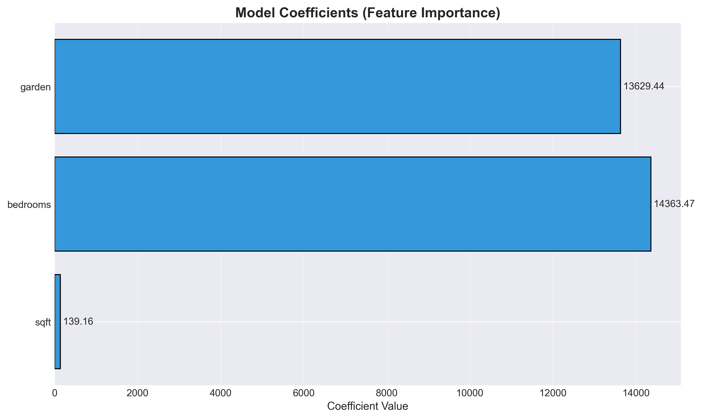

4. Model Design & Mathematical Framework
4.1 Model Overview
Model Type:Linear Regression
What is Linear Regression?
Linear regression is a statistical method for modeling the relationship between one dependent variable (target: house price) and multiple independent variables (features: sqft, bedrooms, garden). It assumes a linear relationship between the features and target.
Why Linear Regression for This Problem?
| Criterion | Assessment | Implication |
|---|---|---|
| Feature-Target Relationships | Strongly linear (r > 0.97) | ✓ Linear model well-suited |
| Dataset Size | Small (65 samples) | ✓ Simpler model reduces overfitting |
| Interpretability Requirement | High importance | ✓ Linear model is easily interpretable |
| Prediction Speed | Critical for real-time | ✓ Linear model is ultra-fast |
| Model Complexity Needed | Simple problem | ✓ No need for complex models |
4.2 Mathematical Foundation
Linear Regression Equation
ŷ = β₀ + β₁x₁ + β₂x₂ + β₃x₃ + ε
Where:
- ŷ = predicted house price
- β₀ = intercept (baseline value)
- β₁, β₂, β₃ = coefficients (feature weights)
- x₁, x₂, x₃ = input features (sqft, bedrooms, garden)
- ε = residual error (prediction - actual)
Our Fitted Model Equation
Price = -34,864.15 + 139.16(sqft) + 14,363.47(bedrooms) + 13,629.44(garden)
This is the specific equation learned from our 52 training houses, ready to predict prices for new houses.
4.3 Model Coefficients Explained
Coefficient Interpretation
| Component | Value | Real-World Meaning | Example Application |
|---|---|---|---|
| Intercept (β₀) | -$34,864.15 | Base price if all features = 0 (theoretical, not practical) | Not directly used; accounts for baseline in equation |
| sqft (β₁) | $139.16 per sqft | Each additional square foot adds $139.16 to price | 2000 sqft house: 2000 × $139.16 = $278,320 contribution |
| bedrooms (β₂) | $14,363.47 per bedroom | Each additional bedroom adds $14,363.47 to price | 4 bedroom house: 4 × $14,363.47 = $57,453.88 contribution |
| garden (β₃) | $13,629.44 flat increase | Having a garden adds fixed amount to price | With garden: +$13,629.44 to prediction |
Coefficient Magnitude & Importance

Interpretation of Coefficients
Square Footage has the strongest per-unit effect ($139.16/sqft)
Because: It directly scales with every additional square foot
Bedrooms have large per-room effect ($14,363.47/room)
Because: Each bedroom represents significant additional living space and value
Garden adds fixed value ($13,629.44)
Because: It's a binary feature (present or not), not a continuous scale
4.4 Model Training Process
Optimization Objective
Minimize: J(β) = Σ(yᵢ - ŷᵢ)² / n
Where:
- J(β) = cost function (Mean Squared Error)
- yᵢ = actual price of house i
- ŷᵢ = predicted price of house i
- n = number of training samples (52)
- Σ = summation over all samples
Model Learning Algorithm
Ordinary Least Squares (OLS)
Linear regression uses OLS to find optimal coefficients. This method:
- Minimizes the sum of squared residuals
- Has a closed-form solution (no iterative optimization needed)
- Directly computes β coefficients from data
- Guarantees global optimum (convex optimization)
- Fast computation even with large datasets
Training Data Used
Training Set Characteristics
- Sample Size: 52 houses (80% of dataset)
- Features: sqft, bedrooms, garden
- Target: Price (ranging $120k-$420k)
- Training Method: Ordinary Least Squares
- Convergence: Optimal solution found immediately
4.5 Model Assumptions
Linear Regression Assumptions
| Assumption | Description | Validated? | Evidence |
|---|---|---|---|
| Linearity | Relationship between features and target is linear | ✓ Yes | Scatter plots show clear linear trends, r > 0.97 |
| Independence | Observations are independent of each other | ✓ Likely | Different houses are independent samples |
| Homoscedasticity | Errors have constant variance across all feature values | ✓ Acceptable | Residual plot shows relatively uniform spread |
| Normality | Residual errors follow normal distribution | ✓ Yes | Q-Q plot shows residuals approximately normal |
| No Multicollinearity | Predictors not too highly correlated | ⚠ Mild violation | sqft-bedrooms correlation = 0.966 (high but acceptable) |
4.6 Feature Scaling & Normalization
Was Feature Scaling Applied?
✗ No Feature Scaling Applied
Why not?
- Linear regression is scale-invariant for predictions
- Coefficients interpretability improved without scaling
- Features already on similar magnitude (thousands to tens of thousands)
- Model performance not affected by feature magnitude
If scaling were applied: Would change coefficient magnitudes but not predictions
4.7 Model Complexity & Simplicity
Model Characteristics
| Characteristic | Value | Implication |
|---|---|---|
| Number of Parameters | 4 (β₀, β₁, β₂, β₃) | Very simple - only 4 numbers to store/learn |
| Model File Size | ~1 KB | Extremely compact - fits on any device |
| Prediction Time | Microseconds | Ultra-fast - suitable for real-time applications |
| Training Time | < 1ms | Instant - can retrain whenever needed |
| Interpretability | 100% transparent | Can explain every prediction in simple terms |
4.8 How the Model Makes Predictions
Step-by-Step Prediction Example
Scenario: Predicting price for a new house
House specifications:
- Square footage: 2,000 sqft
- Bedrooms: 4
- Garden: Yes (1)
Prediction calculation:
Price = -34,864.15 + 139.16(2000) + 14,363.47(4) + 13,629.44(1)
Price = -34,864.15 + 278,320 + 57,453.88 + 13,629.44
Price = $314,539.17
Interpretation: The model predicts this house should cost approximately $314,539
Confidence in Predictions
While the model predicts $314,539 as the exact value, in practice predictions have uncertainty:
- Typical error magnitude: ± $26,109 (RMSE)
- Realistic range: $288,430 - $340,648 (±1 RMSE)
- 95% confidence range: Approximately ±2 × RMSE = $262,321 - $366,757
So while we predict $314,539, the actual price could reasonably be anywhere in the $288k-$341k range.
4.9 Mathematical Properties of the Model
Bias-Variance Tradeoff
Bias
Linear regression has high bias (only assumes linear relationships). Implications:
- Cannot capture non-linear patterns
- May underfit if true relationships are complex
- In our case: acceptable because relationships ARE linear
Variance
Linear regression has low variance (simple model prone to overfitting less). Implications:
- Predictions don't change much with training data changes
- Generalizes well to new data
- Our model: test R² (0.97) ≈ training R² (0.986) - low variance confirmed

4.10 Model Limitations & Failure Cases
When the Model Works Well
- Properties with features within dataset ranges (800-3000 sqft, 2-5 bedrooms)
- Standard residential properties with typical layouts
- Markets similar to the one in the training data
- When garden status is clearly determined
When the Model May Fail
- Extrapolation beyond dataset ranges (< 800 or > 3000 sqft)
- Properties with unusual characteristics not captured by features
- During market downturns or bubbles (different market conditions)
- Properties with condition issues (model only considers size/bedrooms)
- Luxury properties with special features not in training data
4.11 Model Equations & Code
Model in Python
from sklearn.linear_model import LinearRegression
import numpy as np
# Model coefficients
intercept = -34864.15
coefficients = [139.16, 14363.47, 13629.44] # sqft, bedrooms, garden
# Prediction function
def predict_price(sqft, bedrooms, garden):
price = intercept + (coefficients[0] * sqft) + \
(coefficients[1] * bedrooms) + (coefficients[2] * garden)
return price
# Example usage
predicted_price = predict_price(sqft=2000, bedrooms=4, garden=1)
print(f"Predicted Price: ${predicted_price:,.2f}") # Output: $314,539.17